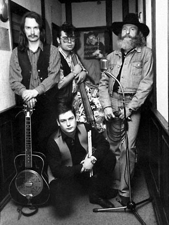
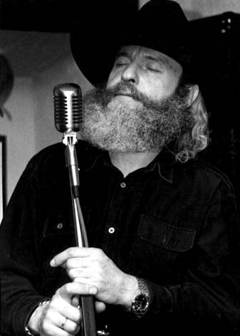

 
Blues Hammer Band был образован весной 1996 года
известным московским музыкантом Михаилом
Соколовым "Петровичем" и гитаристом Николаем
Садиковым, до этого игравшим в группе Fly
to Bluesland. К ним присоединился контрабасист Николай
Второв, известный по работе в группе Бриолинова
Мечта. В этом составе Music Hammer Band дебютировал
на московском Фестивале посвященном 100-летию
губной гармоники "Marine Band" фирмы Hohner в июне 1996
года. Оргкомитет фестиваля рекомендовал Михаила
Соколова представлять Россию на одноименном
международном Фестивале в городе Троссинген
(Германия сентябрь 1996 года). Михаил Соколов занял
четвертое место в конкурсе диатонической губной
гармоники в номинации Jazz с композицией Summertime. В
конце сентября в состав Music Hammer Band вошел молодой
барабанщик Александр Гречанинов (ex. Fly to
Bluesland) и группа приступила к работе над
демонстрационной записью в C.S.Studio (октябрь 1996,
звукорежиссер Алексей Менялин).
В настоящее время Music Hammer Band выступает с сольными концертами в московских клубах: Doctor Blues (ex. Cry Baby), B.B.King, Arbat Blues Club, B.J.Blues, Country Club и др.
Официальный сайт группы Blues Hammer Band - www.blueshammerband.ru
Интервью с Михаилом Петровичем Соколовым по мотивам поездки группы Music Hammer Band в г.Троссинген. Андрей Евдокимов.
One Bourbon, One Scotch, One Bear (2 069k)
If You See That Woman (423k)
 (1
754k)
(1
754k)
I'm In Jail Again (667k)
Bluesman From L.A. (455k)
One Bourbon, One Scotch, One Beer (306k)